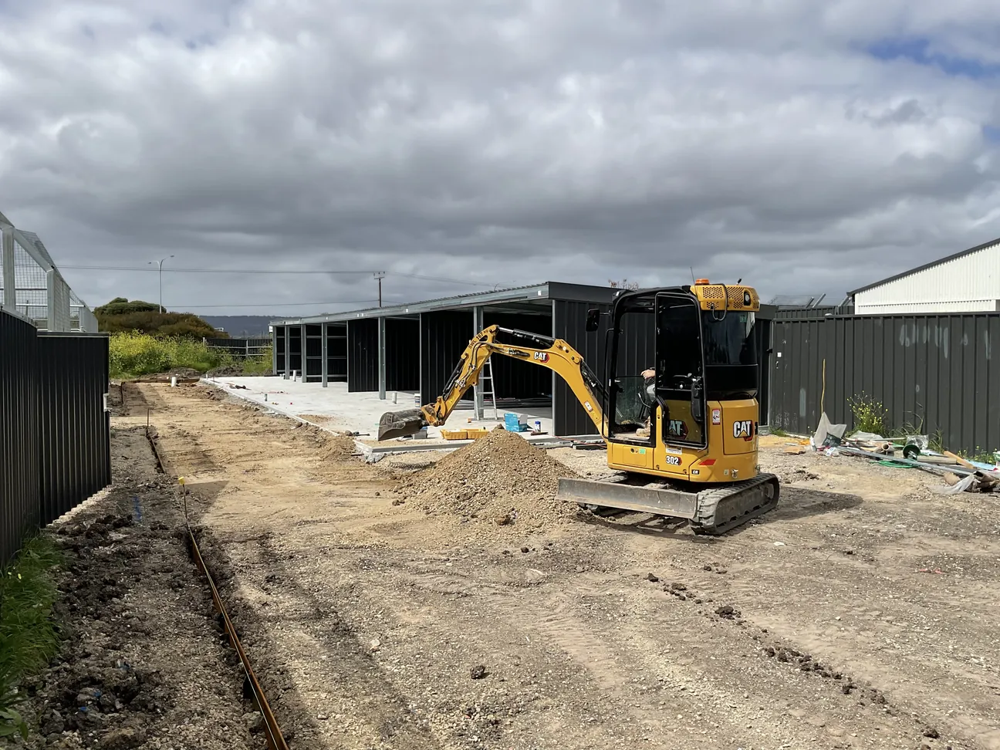

Home / Safety, Quality & Compliance
Safe, compliant and accountable on every site
Licensed, insured and run under a documented WHS system, so builders, councils, schools and facility managers can engage us with confidence.
At a glance
Much of our work happens where people live, learn and work: operating schools, animal shelters, council spaces and occupied homes. Safety and compliance are planned before we arrive, not added on site.
Our team brings decades of combined experience across landscape construction, plant operation, site supervision, quality control and health and safety. Every project has a central point of contact and senior oversight from first site visit to handover.
Licences and registrations
| Building work contractor licence | BLD320507, Consumer and Business Services SA |
|---|---|
| Licence conditions held | Retaining walls; fencing (excluding brick, pool and masonry); stormwater; concrete path paving; brick and segmental paving |
| Industry membership | Master Landscapers Association of South Australia |
| Training registration | Construction Industry Training Board (CITB) South Australia |
| Supplier prequalification | Registered on contractor platforms used by principal contractors, including Felix, Rapid Global, Ventia and ICN |
| Legal entity | Adelaide Express Services Pty Ltd trading as NextLevel Landscaping, ABN 15 642 563 513 |
Insurance
We carry insurance suited to commercial and institutional work. Current certificates of currency are available on request.
| Public liability | $20 million |
|---|---|
| Workers compensation | ReturnToWorkSA |
| Motor vehicles and plant | All vehicles and earthmoving equipment comprehensively insured |
How we manage safety
Safe Work Method Statements
Task-specific SWMS for high-risk work such as excavation, trenching and plant operation, reviewed with the crew before work starts.
Site inductions
Every worker and subcontractor is inducted to site rules, hazards, access routes and emergency arrangements.
Plant pre-start checks
Our excavators, Bobcats, Kanga loaders and vehicles are inspected each day before use, using a documented pre-start checklist.
Principal contractor requirements
We work within the safety systems of builders and head contractors, including their inductions, permits to work and site rules.
Live-site controls
Access, noise, plant movement and public-safety controls are planned around school timetables and facility operations.
Underground services checks
Before any excavation we lodge a Before You Dig Australia enquiry and review the asset plans with the crew. Services are located and marked on site before digging starts.
Incident and hazard reporting
Hazards, near misses and incidents are reported, recorded and passed to the client or head contractor promptly.
Director oversight
A director oversees our WHS system and reviews it as the business and our project types change.
PPE and competency
Crews wear PPE suited to the task, and plant is operated only by people who hold the relevant tickets.
Working on live sites
Schools, community facilities and animal shelters stay open while we work. We plan the job around the people using the site.
- Work zones fenced and signed, with clear separation from students, staff, the public and animals
- Deliveries and heavy plant scheduled outside peak times where possible
- Staged delivery, so areas can be handed back and used while the next stage proceeds
- Underground services identified through Before You Dig Australia before any excavation starts
- Retained trees protected with tree protection zones, and care taken around existing services and drainage
- One point of contact for the site manager or facilities team
Subcontractors
We self-perform most of our landscaping work with our own crews and plant. Where a specialist trade is needed, subcontractors work under our WHS requirements.
- Licence, insurance and SWMS checked before they start on site
- Inducted to the site and to our safety expectations
- Supervised by our team, with the work checked against the scope
Quality and handover
- Design to delivery under one roof. Our in-house landscape architect produces 2D and 3D designs, and the same team builds them, so the design intent carries through to site.
- Director-led quality checks at key stages, not only at the end.
- Clear handover: a final walk-through with the client, plus plant and irrigation care guidance.
- Local supply: we buy South Australian products where available.
Our policies
- Work Health and Safety Policy
- Modern Slavery Policy
- Quality Policy
- Environmental Policy
Compliance documents on request
Procurement and contracts teams can request our compliance pack, which includes:
- Certificates of currency for public liability, workers compensation and vehicles and plant
- Building work contractor licence
- WHS policy and sample SWMS
- Modern slavery policy
- Capability statement and project references
Need our documents for prequalification or a tender?
Tell us about your project and we'll send our compliance pack, usually within one business day.